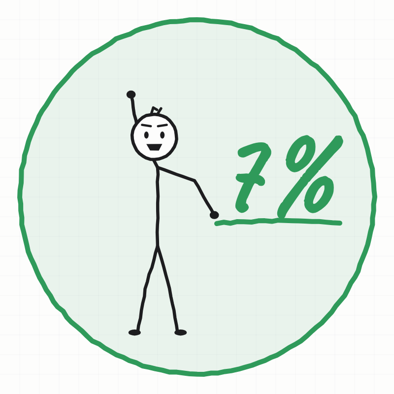

93% of F&O traders lost money in three years, according to SEBI's September 2024 study. The 7% Club makes short, animated explainer videos about the money mistakes most people make, and what the 7% do differently.
Two new videos every day on YouTube, Instagram and Facebook.
Educational content only. Not SEBI-registered. Not investment advice.
Contact: the7percentclub@gmail.com